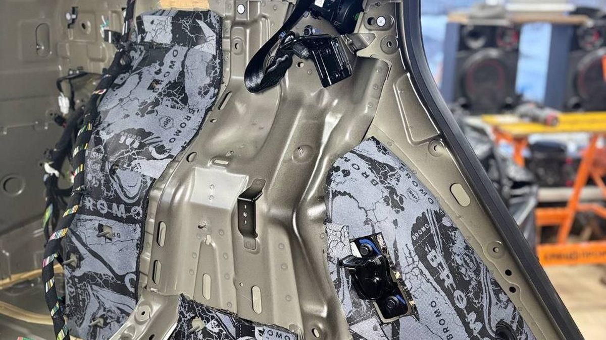

Вашу машину сегодня скорее угонят не ломом, а электроникой, и сделают это тихо. Сигнализация, которая умеет только кричать, против этого почти бессильна.
Утро, вы выходите во двор, а на месте машины пустой прямоугольник асфальта посреди снега. Стекло не разбито – осколков нет. Соседи ничего не слышали. Ключи лежат в прихожей, где лежали. Самое неприятное в этой картине именно тишина: никто не взламывал машину, её просто открыли и уехали.

Машина с бесключевым доступом открывается и заводится, когда ключ рядом. Она «слышит» его на небольшом расстоянии. Угонщики пользуются этим с помощью ретранслятора, в народе его зовут удочкой. Один человек стоит у двери подъезда или под окном, где ночью лежат ключи, второй – у машины. Прибор ловит сигнал ключа и передаёт его дальше. Машина думает, что хозяин рядом, открывает двери и разрешает запуск.
Всё это занимает немного времени и не оставляет следов. Ключ при этом остаётся у вас в прихожей.
Зимой у угонщика есть ещё и помощник – темнота. Во дворе спального района после восьми вечера почти никого, люди спешат от машины к подъезду, капюшоны подняты. Двое с сумкой у чужой машины не вызывают вопросов: мало ли, кто кому помогает завестись в мороз.
Второй путь – подключиться к штатной проводке машины и выдать себя за ключ. Устройства для этого угонщики называют по-разному, одно из названий – «краб». Подбираются к проводам там, где это проще снаружи: через фару, через колёсную арку, под бампером. Прибор отправляет в сеть машины команды, на которые она отвечает, как на свой ключ.
Против такого способа штатная защита машины бессильна: она видит «правильные» команды и выполняет их. Обычная сигнализация, которая поставлена «для галочки», тоже может промолчать, если угонщик обходит её тем же путём.

Сигнализация – это прежде всего сирена и сообщение вам. Она важна: вы узнаёте о проблеме, а сирена мешает работать тихо. Но если угонщик умеет её обойти, она не держит машину на месте.
Поэтому защиту собирают слоями. Каждый слой не делает угон невозможным, но добавляет работы и времени, а время – главное, чего угонщику не хватает во дворе.
Электронная блокировка. Скрытый блок под капотом, который не даёт завести двигатель без вашего разрешения, даже если машина «узнала» ключ. Отдельно можно заблокировать штатный радиоканал, через который машина ищет ключ. Тогда удочке просто нечего ловить.
Механический блокиратор. Железо, которое нельзя обойти программой: на рулевой вал, на педаль тормоза, на коробку передач, под капот. Чтобы его снять, нужен инструмент и время, а это шум и риск.
Приложение и отслеживание. Вы видите, где машина, и получаете тревогу на телефон, а не только сирену во дворе, которую ночью никто не слушает.
Если у машины бесключевой доступ, не оставляйте ключ у входной двери. Уберите его вглубь квартиры, а лучше в экранирующий чехол – это бесплатная половина защиты от ретранслятора. Посмотрите, что у вас стоит сейчас: только штатная охрана, сигнализация без блокировок или уже есть что-то скрытое.
Мы в Ярославле – студия «Автостиль», проспект Октября, 82б. Собираем охрану слоями: сигнализации, подкапотные блоки, блокировку штатного радиоканала и механические блокираторы, а для новой машины можно не переживать за дилерскую гарантию – у студии есть необходимые сертификаты. Подробнее – на странице про охранные системы. Позвоните, назовите марку, модель и год – подскажем, какой набор подойдёт: +7 902 220-75-55.